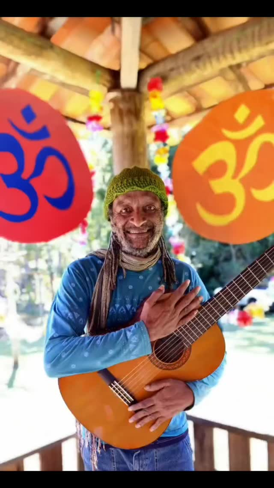
Filho da música
Nasceu no Rio de Janeiro, cresceu em Brasília. Filho de músicos, encontrou na canção um caminho de encontro, consciência e transformação.
Uma travessia em canto, água e reencontro
O canto que reúne.
Uma vida dedicada a cantar pela paz,
pela água e pela cura do planeta.
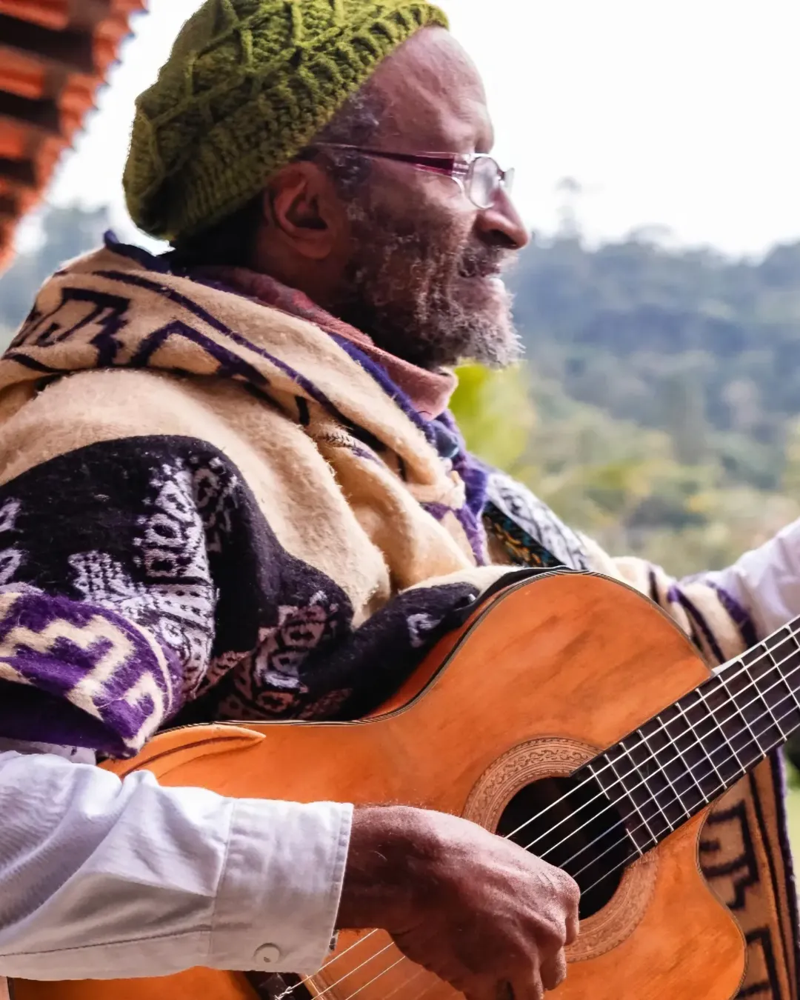
Há canções que não se cantam sozinho.
Há canções que são rezo, são roda, são rio.
Pela Cura
do Planeta
“Pela Cura do Planeta” e “Força da Paz” tornaram-se cantos coletivos — entoados por comunidades e buscadores em diferentes lugares.
Na obra de Leal, água, natureza, espírito e humanidade não aparecem como elementos separados, mas como partes de uma mesma existência.
o fio que atravessa tudo
a fonte da vida
A água guarda memória.
O canto também.
Os dois correm para o mesmo mar.
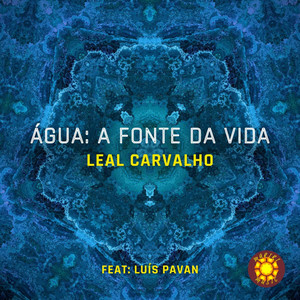
memória viva
Não é uma biografia. É um rio: nasce no Rio de Janeiro, cresce em Brasília e segue correndo — por rodas, celebrações e gerações.

Nasceu no Rio de Janeiro, cresceu em Brasília. Filho de músicos, encontrou na canção um caminho de encontro, consciência e transformação.
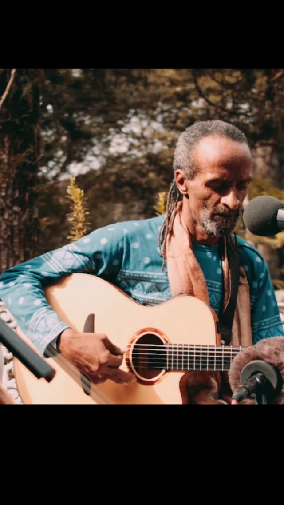
Integrou a Udiyana Bandha, grupo pioneiro da música devocional no Brasil — e tornou-se uma das vozes mais reconhecidas da música de rezo e da Cultura de Paz.
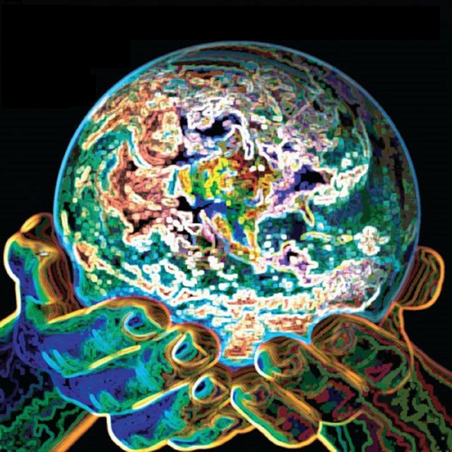
A canção que virou canto coletivo — e deu nome a uma causa.
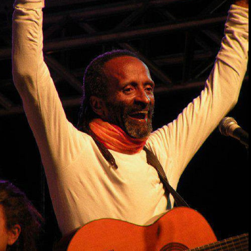
Registro ao vivo: a roda respirando junto, em tempo real.
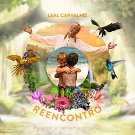
Presente, Infinito, Eterno e Músicas de Rezo e Medicina — o rezo como caminho de volta.
Reconhecimento de uma caminhada dedicada à música, à união entre os povos e a uma consciência mais amorosa para o planeta.
A água como canção — reflexo, fluxo e memória.
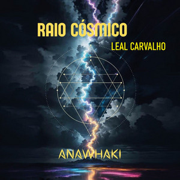
O canto se abre para o céu — sem soltar a mão da roda.
O rio segue.
Continuar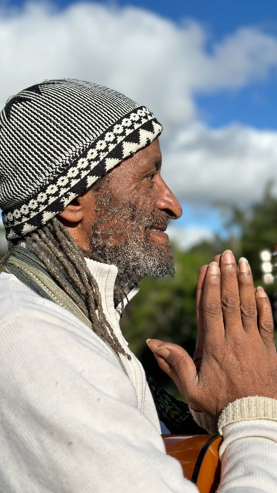
canções de rezo e medicina
com o espírito,
com a paz,
com a natureza,
com a comunidade,
com a própria essência.
Mais do que cantar para um público, Leal abre espaços de presença. Sua música convida cada pessoa a escutar, lembrar e participar.
a música como campo coletivo
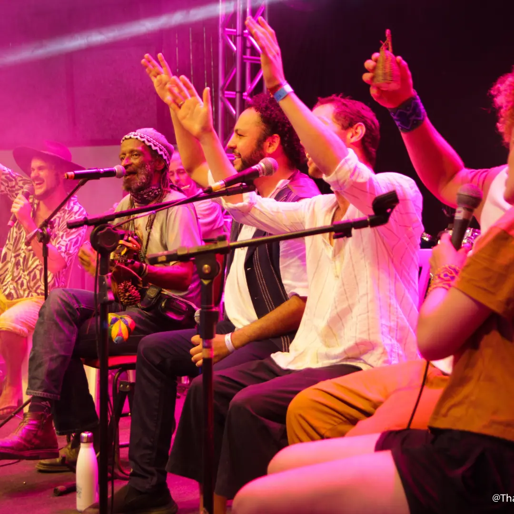
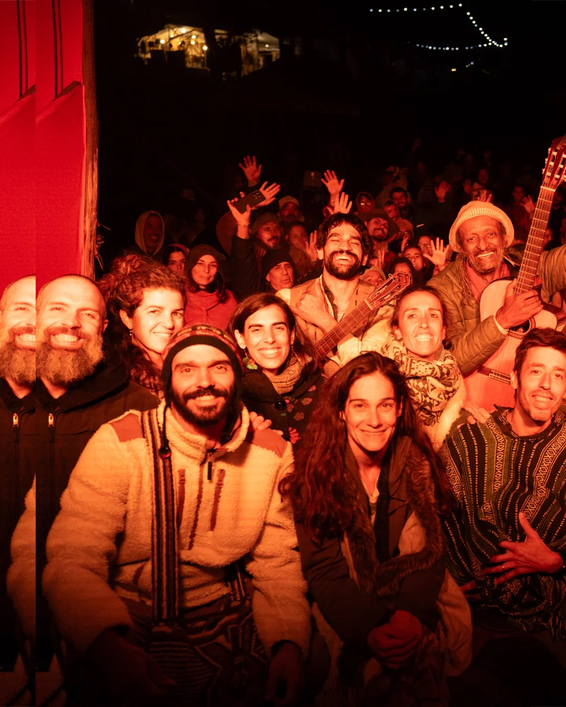
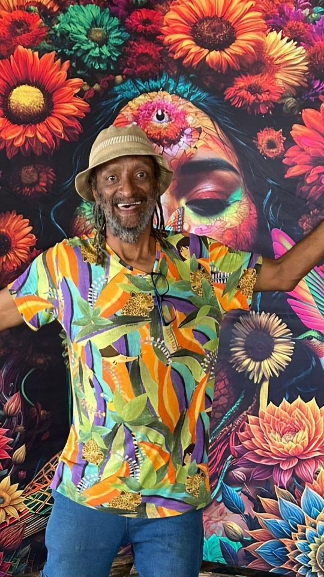
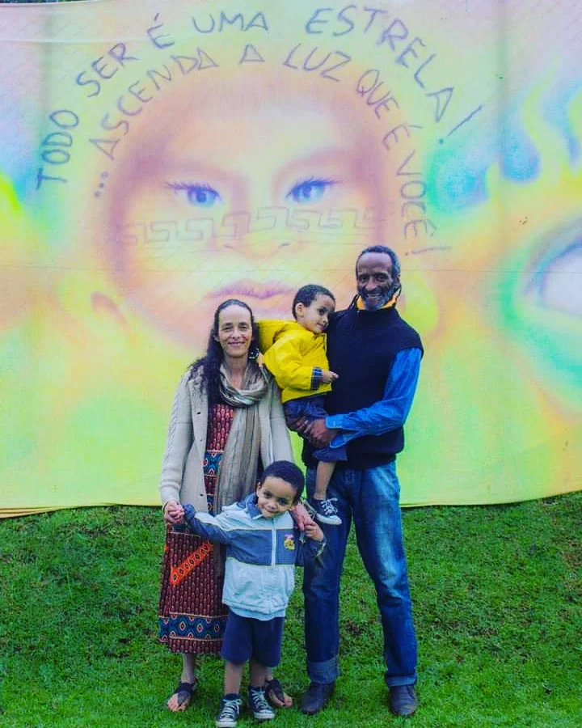
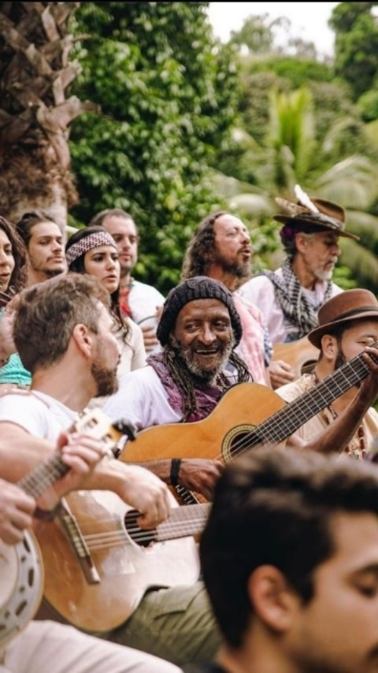
Começa com uma voz.
Depois, outra. E mais outra.
Quando a gente percebe, é coro. É roda. É reza.
A voz individual vira coro, a canção vira oração, e o encontro vira possibilidade de cura.
2025 · Anawhaki
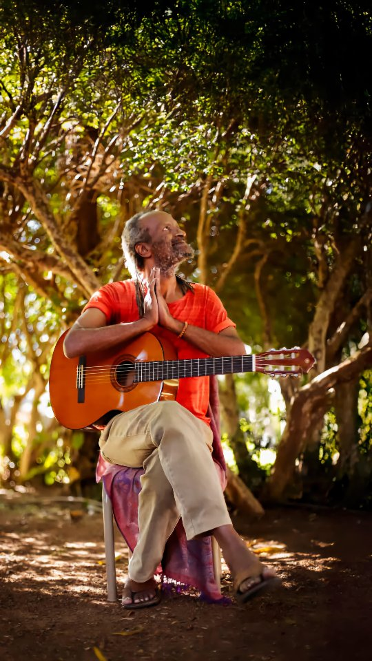
Todo ser é uma estrela.
Acenda a luz que é você.
No trabalho mais recente, o canto se abre para o cosmos — sem deixar o chão, a roda, o humano.
obra
Cada disco é uma roda que ficou gravada.
players e links para streaming em breve
agenda
Rodas, cerimônias e vivências — a música ao vivo, onde ela nasce: no encontro.
local a confirmar
local a confirmar
local a confirmar